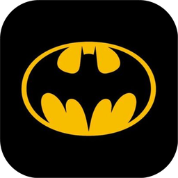

Bat CaveYour planner, built on your own notes.
Bat Cave lives on top of your markdown vault. Journal every day, track your projects, and chat with Alfred, an assistant who actually knows your notes.
- Daily journal
- Plain markdown vault
- Alfred, your AI assistant
- Updates itself
Free download.
First install on Windows: Windows may show “Windows protected your PC” because the installer isn’t code-signed yet. Click More info, then Run anyway. You’ll only see this once.
On Linux: make the AppImage executable (right-click → Properties → “Allow executing”, or chmod +x), then open it.
Using a Mac? A macOS version is on the way.